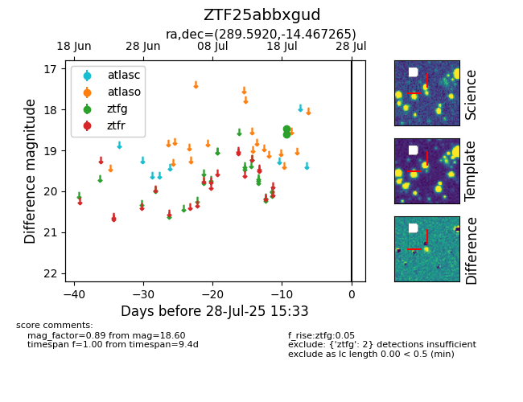

Target ZTF25abbxgud at 2025-07-28 15:33, see:
FINK: fink-portal.org/ZTF25abbxgud
Lasair: lasair-ztf.lsst.ac.uk/objects/ZTF25abbxgud
ALeRCE: alerce.online/object/ZTF25abbxgud
alt names
ZTF25abbxgud (ztf,fink)
coordinates:
equatorial (ra, dec) = (289.5920,-14.46727)
galactic (l, b) = (22.8729,-12.41236)
photometry
last ztfg=18.60
2 ztfg detections
